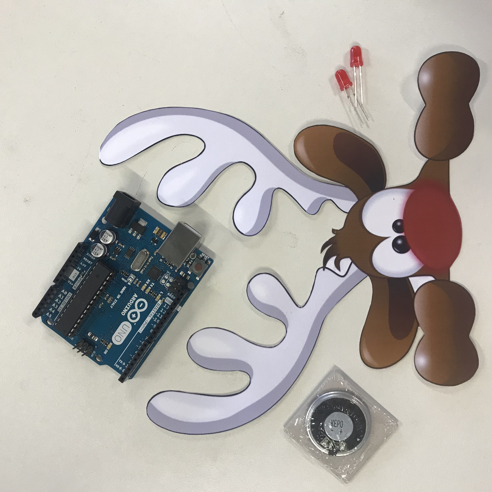
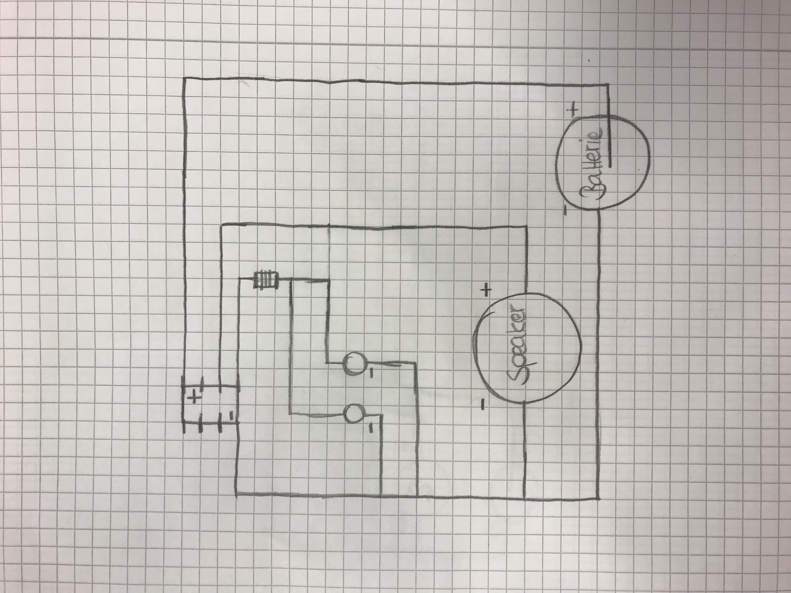
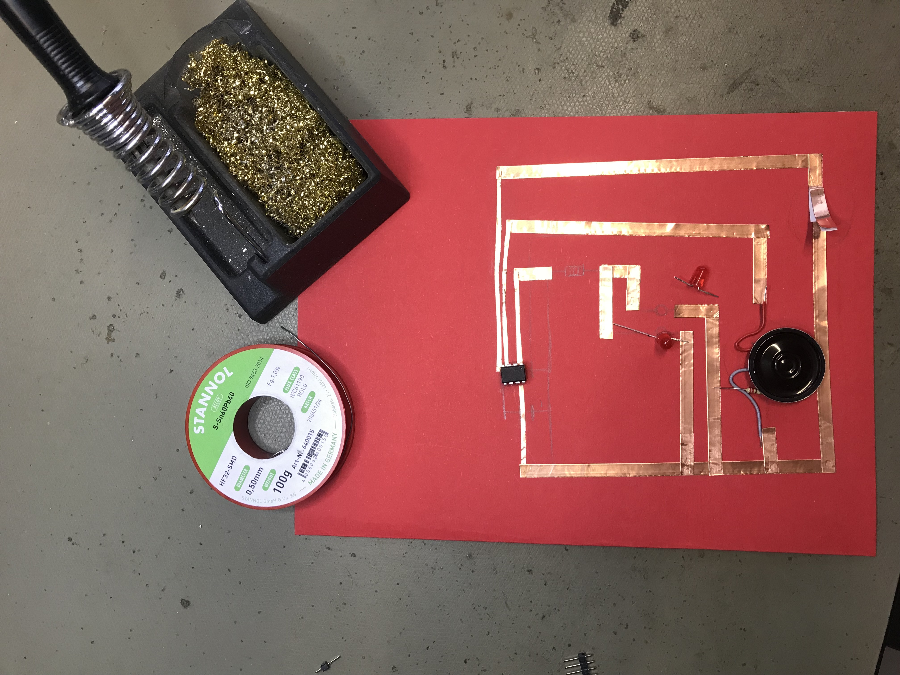
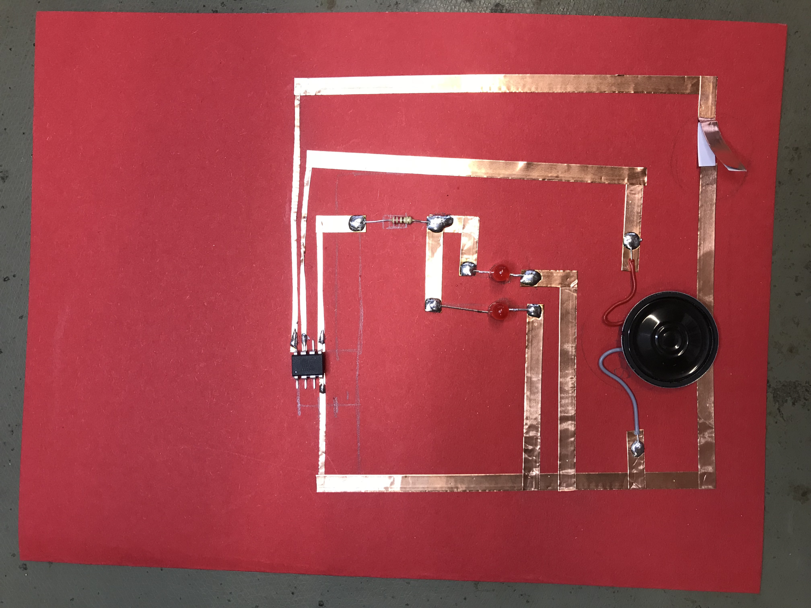
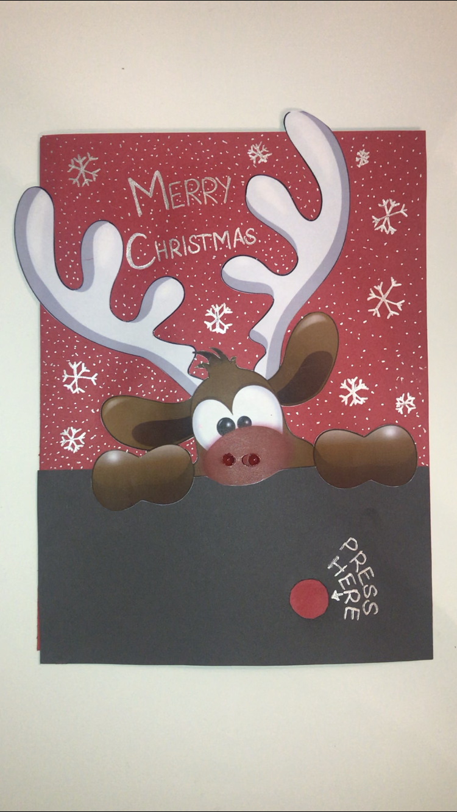

Week 3
Paper Electronics
Creating a Christmas Card
In the second Part of 'Paper Electronics' we tried to implement the learned.
The task this week was to create a card. I decided to make a Christmas postcard that will light up and play Jingle Bells. But first we had to learn how to get sound into the card at all. And this part was a bit tricky at first.
How To
Step 1
In the first step you will decide for your template, so that you will have a nice outcome later on. I decided to with a well known christmas symbol - Rudolph the Red Nose Reindeer. I decided to make a Christmas card with using both options: light and sound. I used Illustrator to prepare my layout.

Step 2
The second step is preparing your electric circuit. For my Card I need two LED's and a speaker, which should play music and blink in the same rythm. Also I need an ATtiny and a resistor, because the LED's need less volt than the speaker ider ATtiny.

Step 3
The next step is putting everything on the postcard and solder all the connections. While soldering the ATtiny you have to be very careful and keep the legs of it seperated. If they touch each other they could cause a short circuit


Step 4
For the switch I decided to make it look like a 'Press Here' button in the end. So that the batteries do not slip I made a small box. In addition, I have connected the batteries with a hot glue gun, so they always lie perfectly together.
Step 5
In the last step everything has tp be glued together. I covered the whole circuit with red paper and decided to make it look like Rudolph is looking over a wall. In addition I have deccorated the card with some snowflakes and the words 'Merry Christmas'.

FINAL RESULT